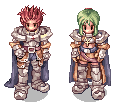
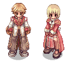

Contact Us: Diamond Dogs
E-mail: diamond_dogs@gmail.com
E-mail: diamond_dogsvice@gmail.com
Our Mission
At Diamond Dogs, our mission is to unearth the rarest and most
powerful monster cards in the vast world of Ragnarok Online. As a
top-tier guild of elite players, we embark on daring quests to conquer
challenging maps, defeat formidable MVPs, and capture the essence of
mythical creatures.
Through our website, we extend an invitation to fellow adventurers and
collectors to partake in the spoils of our epic journeys. Explore our
curated collection of rare monster cards, each one a testament to our
guild's skill, strategy, and indomitable spirit.
These coveted monster cards are not merely collectibles—they are keys
to unlocking unparalleled power. Enhance your equipment and amplify
your strength by harnessing the unique attributes of these rare cards.
Join us in celebrating the thrill of the hunt and the allure of
legendary monsters. Your journey into the realm of Ragnarok begins
here, where every card tells a story of triumph and the relentless
pursuit of greatness.
Join the Diamond Dogs!
Join our ranks and contribute to the legacy of Diamond Dogs. We are actively seeking skilled adventurers of level 90 and above, specializing in transcendent classes like Paladins and High Priests. Their unique abilities are crucial in enhancing our capacity to conquer the most challenging encounters and unearth the rarest monster cards.
Want to talk to us?
Want to talk to us or need some support with the purchases or website?
Current Guild Openings!
We're looking for individuals who are passionate about Ragnarok
Online.
Take a look at who we are looking for today, to add to our guild!
-
Paladin
We're seeking a PALADIN to contribute to the defence lines of our Ranks, who can REALLY take bosses hits and survive!
Requirements
Level 90+
VIT: 90
TANK BUILD SKILLS!

-
High Priest
We're in search of a HIGH PRIEST to bolster the support lines of our Ranks, who are capable of making a difference by analyzing situations, saving players lives, and, of course, applying a full array of buffs to prepare everybody for the tough battles ahead!
Requirements
Level 90+
ALL THE BUFFS AND SUPPORT SKILLS!

Why Join Us?
In our pursuit of treasures, all other drops will be distributed
among our members. Initially, we focus on ensuring that items go to
those who can make the best use of them. The division process starts
by identifying players who genuinely need and can benefit from the
items. As for the distribution of profits, luck plays a role
initially, and then we eliminate participants who haven't received
items yet. However, the value of items and their significance to
strengthening our hunters is always considered. Monster cards, in
particular, are prioritized for our hunters as essential upgrades to
their gear.
Any extra monster cards we acquire during our adventures are made
available for sale through our website, contributing to the guild's
prosperity and funding future endeavors. Join us in this adventure,
where teamwork and strategic distribution ensure not only individual
success but the collective triumph of Diamond Dogs.

OUR GUILD MEMBERS
Guild Leader: André Anu B. Martins
Head of Treasury: Alejandra Hernandez
Head of Army: Hidetoshi Okada